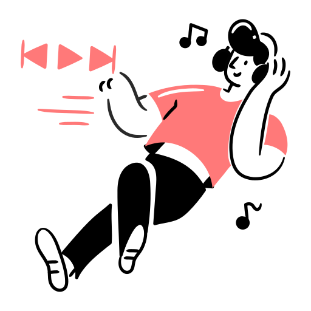

Çalışmaya başladığınızdan itibaren telefonunuz 0 kere dikkatinizi dağıttı
Daha verimli çalışmak için pomodoro tekniğini öğrenin
Pomodoro tekniği nedir?Araştırmalar, çalıştığınız, ders çalıştığınız veya benzer türde bir faaliyet gerçekleştirdiğiniz durumlarda müzik veya arka plan gürültüsü dinlemenin çeşitli faydalar sağlayabileceğini göstermektedir.
Müzik dinlemenin zeka ve çeşitli bilişsel işlevleri ölçen testlerde performansı artırdığı ve insanların zihinsel aritmetik yapma becerilerini geliştirdiği gösterilmiştir
Müzik dinlemenin ,depresyon hislerini azaltma ve ameliyat sonrasında iyileşmeye destek olma dahil olmak üzere çeşitli şekillerde fiziksel ve zihinsel sağlığa katkıda bulunduğu kanıtlanmıştır.
Müzik dinlemenin öğrencilerin okuduğunu anlama ve materyal öğrenme becerilerini geliştirdiği kanıtlanmıştır.
Müzik dinlemenin insanların uzun süreler boyunca tekrarlayan görevleri yerine getirirken konsantrasyonlarını korumalarına yardımcı olduğu kanıtlanmıştır.